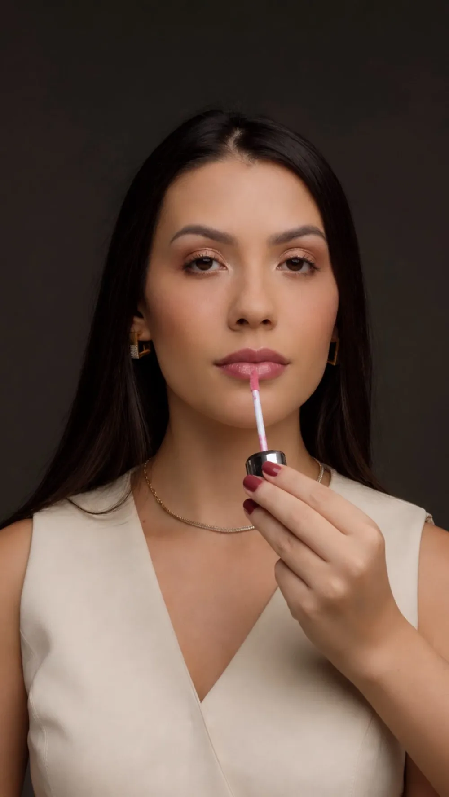
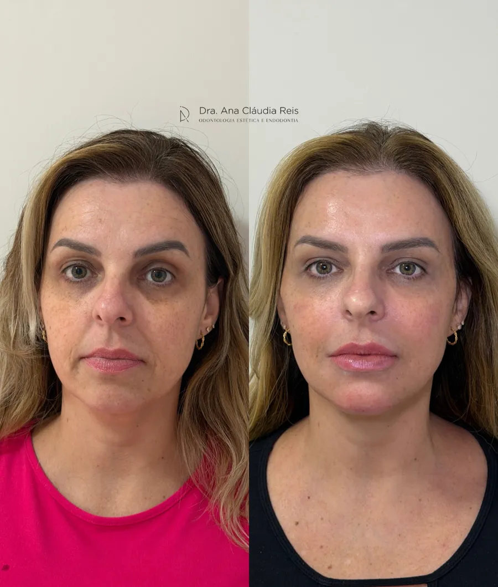
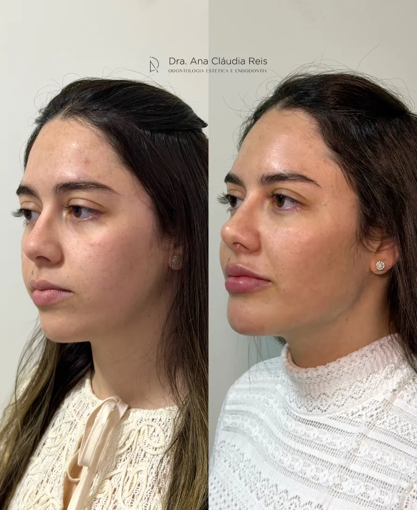
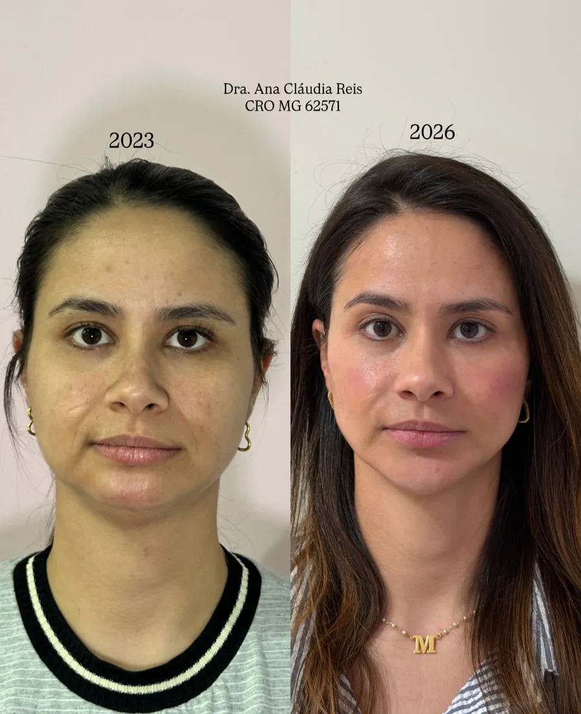
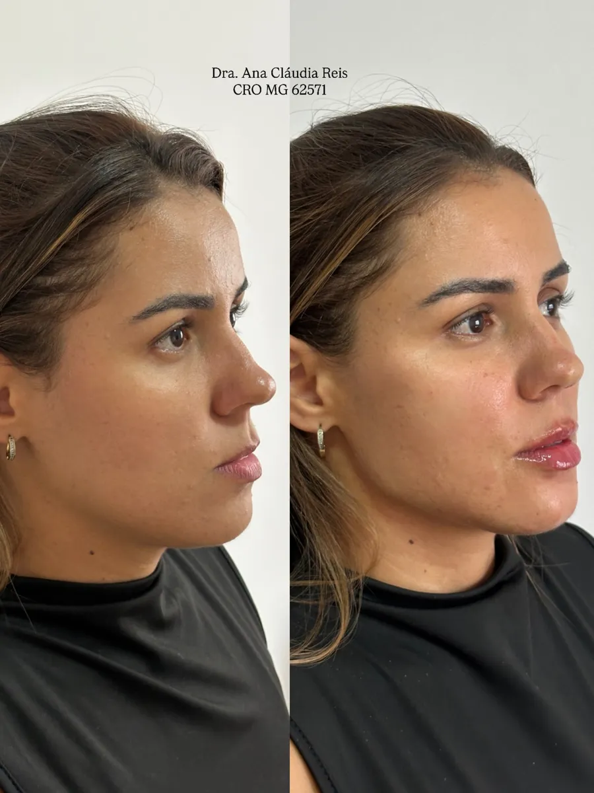
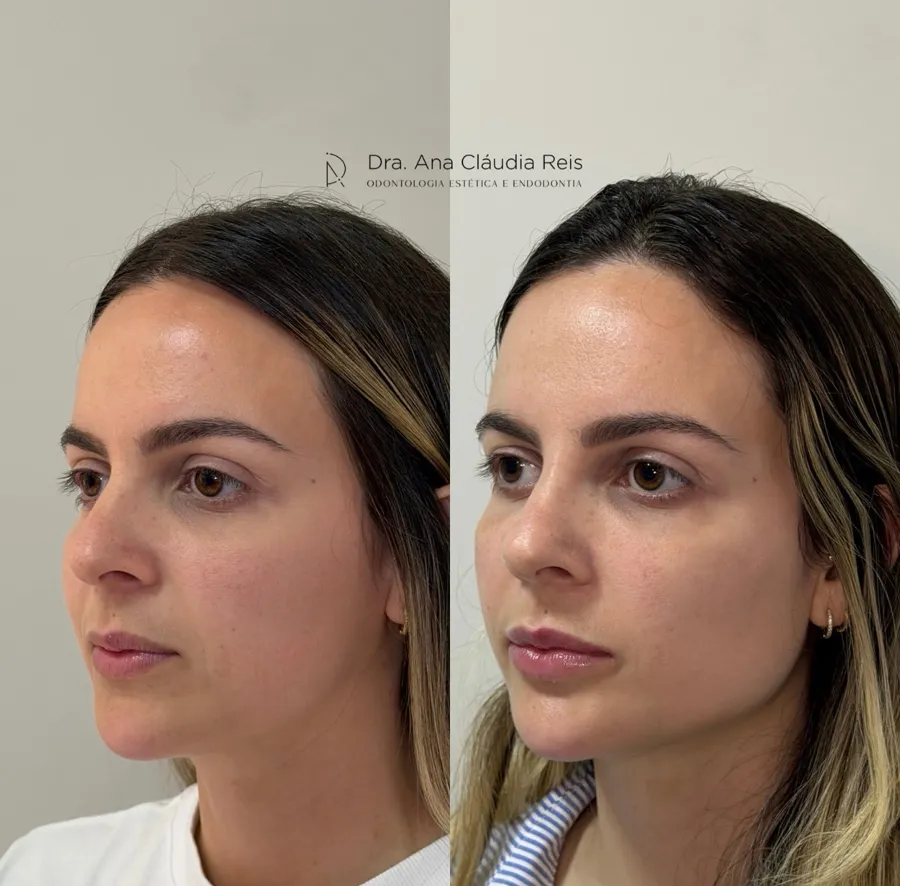
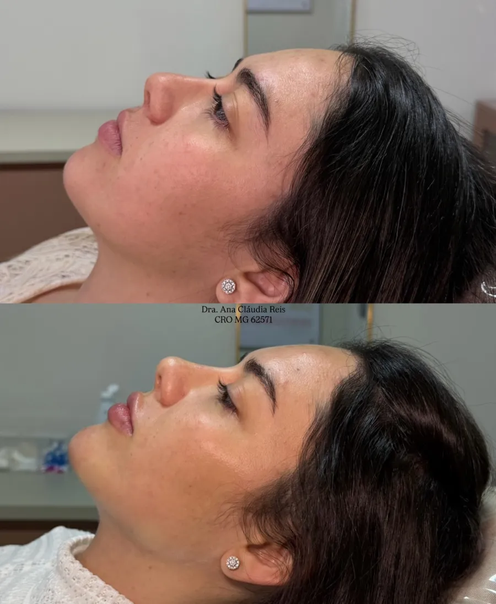
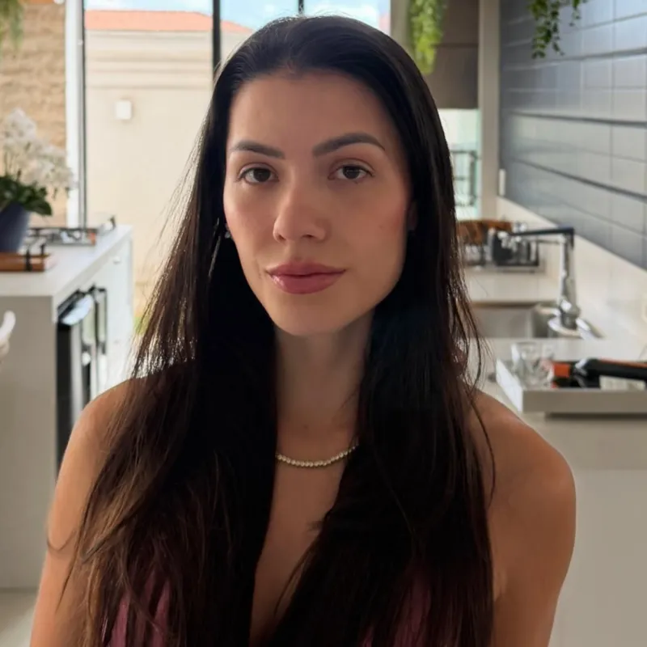

Naturalidade e elegância em cada detalhe
Um olhar individualizado para valorizar sua beleza e respeitar aquilo que faz você ser única.
Atendimento em Carmo da Cachoeira, Varginha e região

O cuidado começa pela escuta
A Dra. Ana Cláudia Reis é cirurgiã-dentista e atende em Carmo da Cachoeira, Varginha e região, com foco em harmonização facial.
Antes de falar em procedimento, ela quer entender o que você gosta no seu rosto, o que incomoda e o que espera. A proposta é cuidar dos detalhes sem apagar seus traços: um resultado que pareça você.
Formação, cursos e trajetória profissional
Dra. Ana Cláudia ReisCRO-MG 62571
Beleza não é transformação.
É potencialização.
Sem fórmula pronta
Cada rosto tem proporções, expressões e uma história próprias. O atendimento parte disso.
Escuta
A consulta começa pelo que você sente e espera, antes de qualquer indicação.
Avaliação individual
Proporções, expressão e histórico de saúde são analisados no seu rosto, e não a partir de um padrão.
Plano compartilhado
Você conhece as opções e os limites de cada uma, e decide junto com a profissional. Não fazer nada também é uma resposta possível.
Tratamentos
A indicação de cada procedimento depende da avaliação presencial.
-
Harmonização facial
Conjunto de procedimentos planejados para equilibrar as proporções do rosto, respeitando seus traços. O plano é definido depois da avaliação.
Agendar avaliação -
Toxina botulínica (botox)
Suaviza a contração de músculos ligados a algumas linhas de expressão. Pontos e dose são definidos para o seu rosto.
Agendar avaliação -
Preenchimento labial
Ácido hialurônico para contorno, hidratação ou volume dos lábios, na medida que respeita a proporção do seu rosto.
Agendar avaliação -
Rinomodelação
Preenchimento que pode suavizar irregularidades do perfil do nariz, sem cirurgia. Indicação restrita, definida na avaliação.
Agendar avaliação
Resultados
Pacientes atendidas pela Dra. Ana Cláudia Reis, com imagens publicadas com autorização. Cada rosto responde de um jeito: o resultado depende da avaliação e do plano individual.






Como funciona
Etapas conforme o processo real do consultório
-
Contato
Você envia uma mensagem contando o que gostaria de avaliar.
-
Agendamento
Vocês combinam data, horário e local da consulta.
-
Consulta de avaliação
Conversa, análise do rosto e do histórico de saúde. Se houver indicação, você conhece as opções e seus limites.
-
Orientações
Você recebe as orientações de cuidado e sabe o que esperar nos dias seguintes a qualquer procedimento.
Dúvidas frequentes
Respostas revisadas pela profissional
Preciso de avaliação antes de um procedimento?
Sim. A indicação depende da avaliação presencial, que também é o momento de tirar dúvidas e decidir com calma.
Como faço para agendar?
Envie uma mensagem pelo Instagram @draanaclaudiareis_ dizendo o que gostaria de avaliar e em qual cidade prefere ser atendida.
Onde é o atendimento?
Em Carmo da Cachoeira e Varginha. Endereços e horários
Como me preparar para a consulta?
Leve a lista de medicamentos que usa e conte sobre alergias, condições de saúde e procedimentos estéticos que já fez.
Dentista pode fazer harmonização facial?
Sim. A harmonização orofacial faz parte da atuação do cirurgião-dentista e é regulamentada pelo Conselho Federal de Odontologia.

Agende sua avaliação
Conte o que gostaria de avaliar e em qual cidade prefere ser atendida. Não é preciso enviar dados de saúde por mensagem.
Carmo da Cachoeira
Endereço e horários
Varginha
Endereço e horários